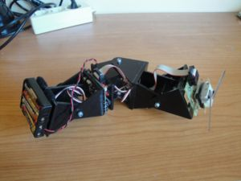
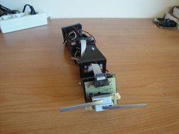
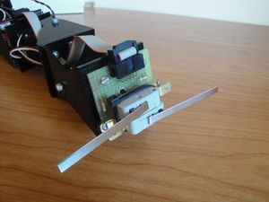

Minicube-II con Módulos Y1 y dos bumpers (click para ampliar)
Contenido
[ocultar]Introducción
Programación de comportamientos en el robot Minicube-II. En esta página se irán poniendo el software usado para implementar comportamientos así como los resultados obtenidos.
Fotos
| Álbum de fotos |
|  Robot Minicube-II con dos sensores de contacto frontales (click para ampliar) |
 Detalle de la placa con los bumpers (click para ampliar) |
Comportamiento I: evitar obstáculos
Implementación mediante osciladores
En este vídeo se puede ver el comportamiento implementado. Cuando se activa alguno de los bumpers, el robot retrocede, gira un poco a la derecha y continúa avanzando.
|
|


Bitácora
- 30/Jul/2010: Primera prueba. Implementación de un comportamiento sencillo de evitar obstáculos usando osciladores (Blog)
- 16/Jul/2010: Construido el robot Minicube-II con módulos Y1 y una tarjeta Skycube. Se ha añadido una tarjeta en la cabeza que incorpora dos bumpers (Blog)
Repositorio
- SVN del proyecto http://svn.iearobotics.com/Minicube_behavior
Licencia
| |
|
|
| Este proyecto tiene una licencia libre. Se permite expresamente su copia, modificación, distribuición y fabricación siempre que se reconozca a los autores y se comparta el proyecto bajo la misma licencia.
Descarga de Responsabilidad. Los autores no se hacen responsables en ningún caso de los posibles daños o pérdidas de garantía que pueda ocasionar el uso, debido o indebido de la información contenida en este proyecto. |
Autores
- Fernando Herrero Carrón
- Pablo Varona
- Francisco de Borja Rodríguez
- Juan González-Gómez
Enlaces
Noticias
- 31/Julio/2010: Añadido vídeo de comportamiento sencillo en Minicube-II
- 15/Julio/2010: Comenzada esta página